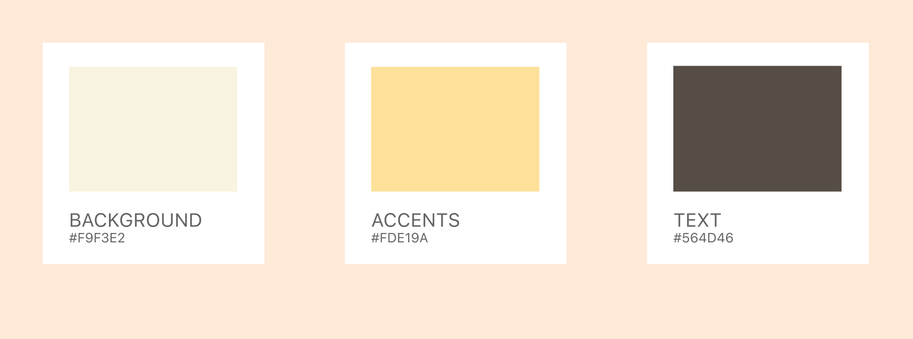
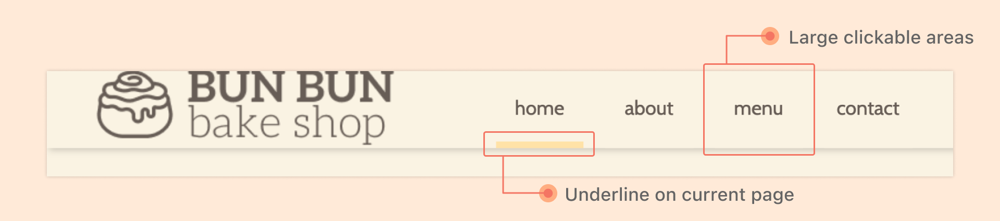
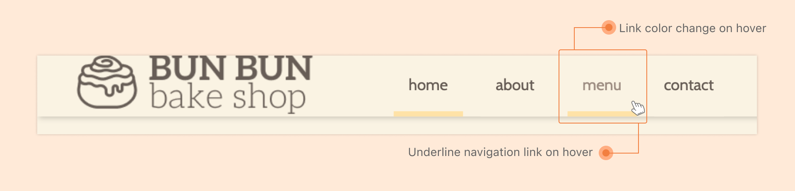
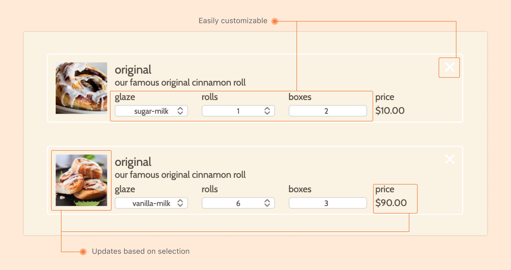

Other Projects
An online website for a fictional bakery to facilitate an online ordering process
Problem
Bun Bun Bake Shop, a fictional bake shop, is now allowing its customers to order online. They need a website that would enable customers to learn more about them, browse the menu, and place an order.
Insight
Based on user studies, I found that ordering and shopping websites generally fail to leverage design to improve the efficiency of the ordering process.
Outcome
A website that leverages design theories and techniques and places a unique emphasis on user needs
Competitive Analysis
I analyzed three different online bakery websites. These were online bakeries in Pittsburgh. Overall, I found the following strengths and weaknesses in these websites:
Low-Fidelity Prototyping
I began the process with rapid prototyping followed by a user test where I used the Wizard of Oz technique. I then iterated on my first paper prototype based on feedback and my competitive analysis. After which, I conducted another user test.
High-Fidelity Prototyping
Moving forward, I used Figma and InVision to create a clickable high-fidelity prototype based on the goals of expected users, considerations for the design, and various aspects of the design and screen transition.
Color Scheme
Young, fun, and upbeat colors with hints of colors of pastries
HTML/CSS Implementation
This project challenged me not to use any existing frameworks and libraries. It was my first time coding a website, so this proved to be a difficult but rewarding process.
JavaScript Implementation
After creating the website with HTML/CSS, I used JavaScript to implement features like adding and removing an item from the cart and making elements responsive to the user’s selection.
Some Highlights
Fixed header with large target size for links

Navigation bar mouse hover interaction

Highly customizable shopping cart experience
Reflection
Each prototype, user test, and implementation process was significant to the final design. My greatest takeaway from this project was how much websites are being tailored to be easy for the user. Subtle helps like making the target of a clickable area larger could greatly improve the user experience, even without the user's knowledge. I find it very interesting to see design and psychology theories be implemented in website design, usually without our knowledge.